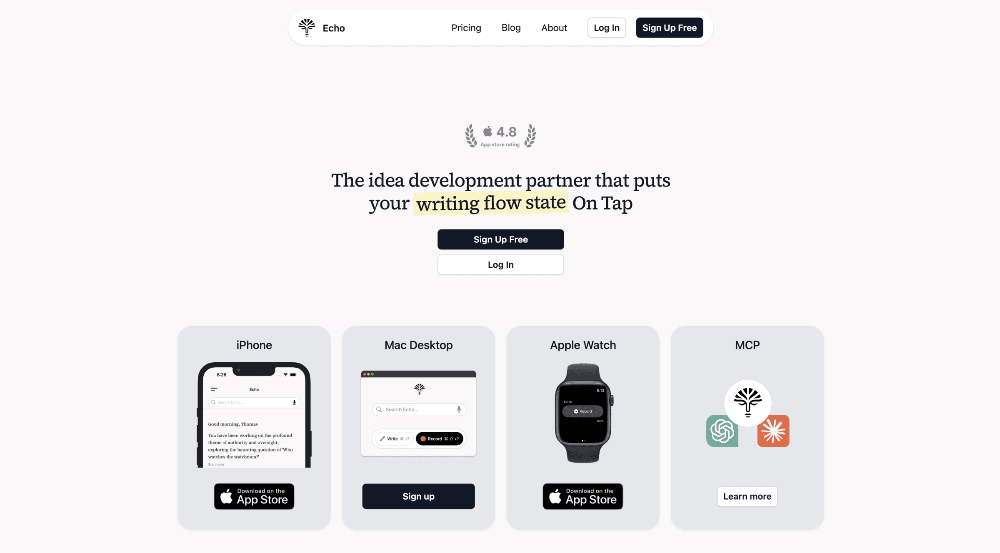

Thomas’ Portfolio
Echo
Role of Cofounder, from 2024 - 2025,
building and marketing
a voice note and AI-assisted writing app
Role of Cofounder, from 2024 - 2025,
building and marketing
a voice note and AI-assisted writing app
Echo is a note-taking tool for online writers to capture and develop their ideas. My cofounder and I pivoted into Echo after 5 months of tinkering with AI. We grew the team, shipped a multi-platform product, and built an audience of AI curious writers.
landing page 2025
Capture
Develop
Write
To meet users where they are, at the moment of inspiration, Echo had to be multi-platform. Echo can be found on:

onboarding
iOS app
web dashboard
note details
Marketing directly to consumers, I explored the depths of the idea that "first time founders focus on product, second time founders focus on marketing." I created content across:
marketing